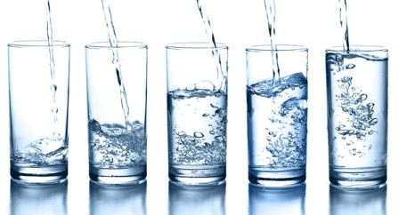

Види води на Землі: від мінеральної до дистильованої
Вода — найдивовижніша речовина на планеті. Залежно від того, де її видобули та як обробили, вона може бути як ліками, так і небезпечною речовиною. Щоб правильно обирати воду для себе та своєї родини, важливо розуміти основні види H2O.
Основна класифікація води
1. Природна вода (джерельна, артезіанська)
Це вода, яка пройшла природну фільтрацію крізь шари піску та каменю. Вона багата на мінерали, але не завжди безпечна: у ній можуть бути бактерії або надлишок заліза.
2. Мінеральна вода
Вода з високим вмістом солей (магнію, кальцію, натрію). Буває столова (для щоденного пиття) та лікувальна (приймається курсами за призначенням лікаря).
3. Дистильована вода
Вода, очищена шляхом випаровування. У ній немає взагалі жодних домішок. Вона ідеальна для техніки, але не підходить для постійного пиття, оскільки вимиває мінерали з організму.
4. Професійно очищена вода (Crystal Water)
Це сучасний стандарт. За допомогою зворотного осмосу з води видаляються всі шкідливі домішки, а потім до неї повертається необхідний баланс корисних мінералів. Це робить її ідеальною для щоденного вживання.
Яку воду обрати для різних цілей?
- Для щоденного пиття: Очищена вода з мінералізацією. Вона підтримує баланс в організмі та не перевантажує нирки.
- Для лікування (за призначенням): Спеціальні лікувальні мінеральні води.
- Для дитячого харчування: Лише стерильна очищена вода (без хлору та бактерій).
- Для технічних потреб (праска, акумулятор): Дистильована вода.
Обирайте найкраще від природи та технологій
Crystal Water поєднує природну чистоту та науковий підхід. Доставка якісної питної води в Бровари та Київ.
Замовити ідеальну воду